結構學（SA）｜命題大綱 U2-4 矩陣分析法・單元三｜影片講義
SA-U2-4-3 矩陣分析法：座標轉換與整體組裝
影片 10:24 ・ 8 章 ・ 22 段旁白 ・ 例題：三桿桁架（一次靜不定）
單元三 ＝ 語言翻譯 ＋ 對號入座
開場
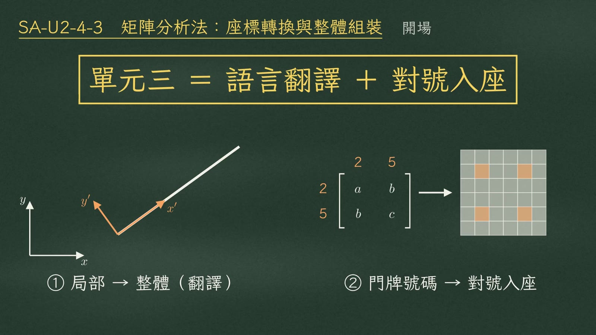
單元三的兩件事：① 局部 → 整體（翻譯） ② 門牌號碼 → 對號入座影片 0:27
上一集把元素勁度矩陣一根一根量出來，這一集要把它們拼成整個結構。其實只做兩件事：
- 語言翻譯：把每根桿自己的局部座標，翻成大家共用的整體座標；
- 對號入座：照自由度的門牌號碼，把小矩陣加進大矩陣。
一、局部座標與轉換矩陣
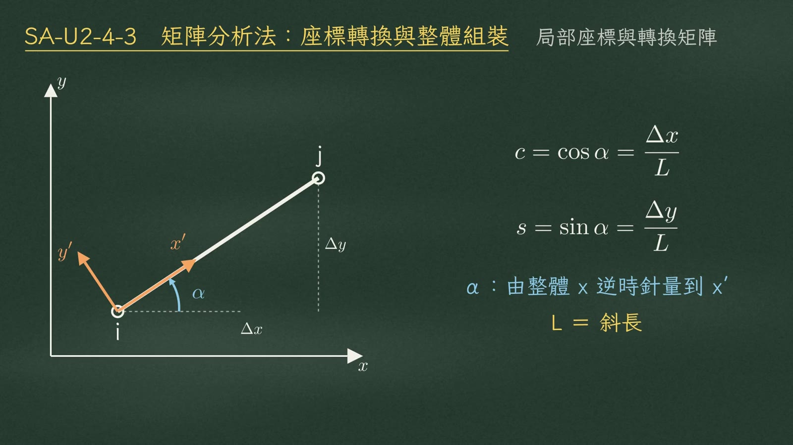
斜桿 i→j 的局部座標：x′ 沿桿軸、y′ 垂直桿軸（橘），α 由整體 x 逆時針量到 x′影片 0:56
先看一根斜桿，從 i 端指向 j 端。沿著桿軸畫 \(x'\)，垂直桿軸畫 \(y'\)，這就是桿自己的局部座標。從整體 \(x\) 軸逆時針量到 \(x'\) 的角度，叫 \(\alpha\)。
$$c=\cos\alpha=\frac{\Delta x}{L},\qquad s=\sin\alpha=\frac{\Delta y}{L},\qquad L=\text{斜長}$$
在局部座標裡，元素勁度最單純；可是每根桿的 \(x'\) 方向都不一樣，不能直接相加，所以要換基底。轉換矩陣 \([R]\) 是 3×3：
$$[R]=\begin{bmatrix}c&s&0\\-s&c&0\\0&0&\color{#3f8f5a}{1}\end{bmatrix}$$
注意右下角是 1
轉角是純量，換座標不會變——平移 \(u, v\) 要轉，轉角 \(\theta\) 不用轉。
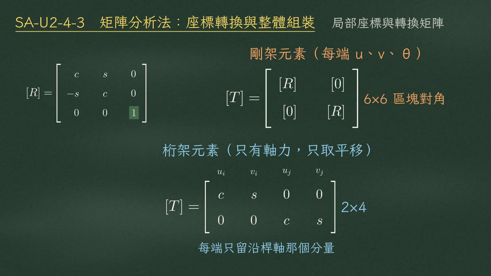
[T] 的兩種形式：剛架 6×6 區塊對角（每端 u、v、θ）；桁架 2×4（每端只留沿桿軸分量）影片 1:44
剛架元素兩端各三個自由度，所以 \([T]\) 是把 \([R]\) 放兩次的 6×6 區塊對角矩陣。桁架元素只有軸力，只取平移、而且只要沿桿軸那個分量，退化成 2×4：
| 元素 | [T] | 大小 |
|---|
| 剛架（每端 u、v、θ） | \(\begin{bmatrix}[R]&[0]\\ {[0]}&[R]\end{bmatrix}\) | 6×6 區塊對角 |
| 桁架（只有軸力） | \(\begin{bmatrix}c&s&0&0\\0&0&c&s\end{bmatrix}\)（欄序 \(u_i,v_i,u_j,v_j\)） | 2×4 |
二、三明治公式
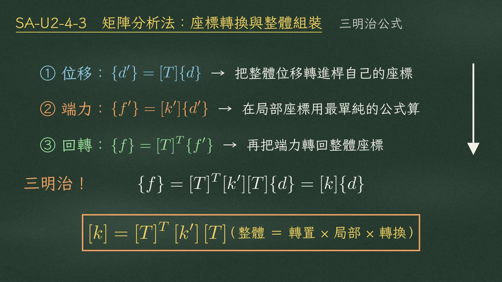
三步驟串成三明治：位移翻譯進來 → 局部算端力 → 端力翻譯回去影片 2:35
接下來是整集最重要的公式。三個步驟：
| 步驟 | 公式 | 意義 |
|---|
| ① 位移 | \(\{d'\}=[T]\{d\}\) | 把整體位移翻譯進桿自己的座標 |
| ② 端力 | \(\{f'\}=[k']\{d'\}\) | 在局部座標用最單純的公式算端力 |
| ③ 回轉 | \(\{f\}=[T]^T\{f'\}\) | 再把端力翻譯回整體座標 |
三步串起來，中間這一整串，就是可以直接組裝的整體元素勁度矩陣：
$$\{f\}=[T]^T[k'][T]\{d\}=[k]\{d\}$$
三明治公式
\([k]=[T]^T\,[k']\,[T]\)（整體 ＝ 轉置 × 局部 × 轉換）——局部矩陣被兩個 \(T\) 夾在中間。
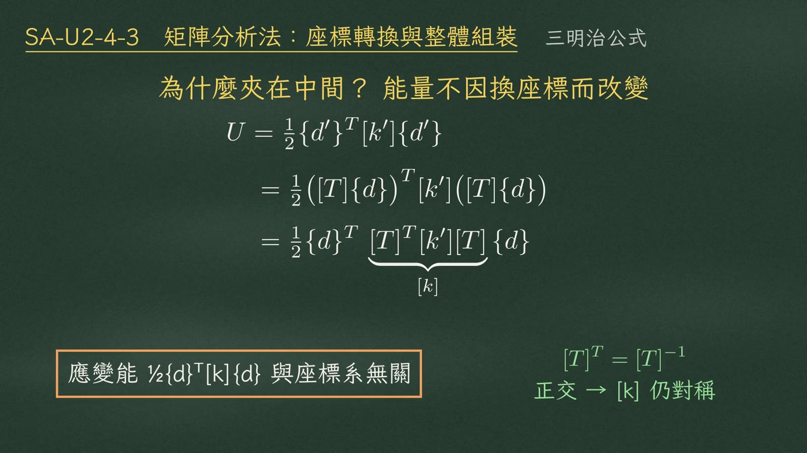
為什麼夾在中間？應變能與座標系無關；\([T]^T=[T]^{-1}\) → [k] 仍對稱影片 3:03
為什麼一定是夾在中間？因為能量不會因為換座標而改變。應變能 \(\tfrac12\{d'\}^T[k']\{d'\}\)，把 \(\{d'\}\) 換成 \([T]\{d\}\) 代進去，轉置拆開，剛好整理成 \(\tfrac12\{d\}^T[k]\{d\}\)：
$$\begin{aligned}U&=\tfrac12\{d'\}^T[k']\{d'\}=\tfrac12\big([T]\{d\}\big)^T[k']\big([T]\{d\}\big)\\&=\tfrac12\{d\}^T\underbrace{[T]^T[k'][T]}_{[k]}\{d\}\end{aligned}$$
而且 \([T]\) 是正交矩陣，\([T]^T=[T]^{-1}\)，夾完以後 \([k]\) 一定還是對稱。
三、考場速算
✗ 考場千萬不要真的去乘 \([T]^T[k'][T]\)
直接用夾完的結果代 \(c\)、\(s\)。
以桁架為例，\([k']=\dfrac{EA}{L}\begin{bmatrix}1&-1\\-1&1\end{bmatrix}\)。夾完的結果就是 \(\dfrac{EA}{L}\) 乘上 4×4：左上是 \(c^2, cs, cs, s^2\)，右上和左下加負號，右下又一樣。
$$[T]^T[k'][T]=\frac{EA}{L}\begin{bmatrix}c^2&cs&-c^2&-cs\\cs&s^2&-cs&-s^2\\-c^2&-cs&c^2&cs\\-cs&-s^2&cs&s^2\end{bmatrix}$$
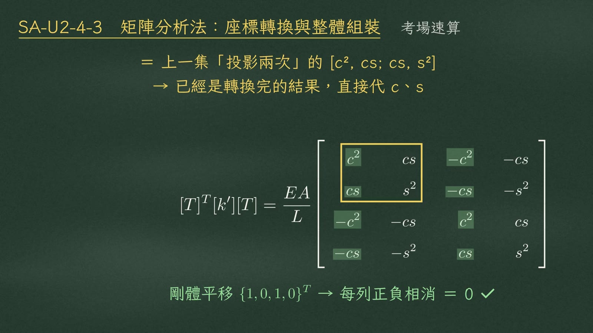
左上 2×2（黃框）＝上一集「投影兩次」；剛體平移 {1,0,1,0}ᵀ → 每列正負相消 ＝ 0影片 3:52
左上那個 2×2，就是上一集投影兩次得到的矩陣，它其實已經是轉換完的結果。考場直接代 \(c\)、\(s\) 就好。
順手做剛體檢查
兩端一起平移 \(\{1,0,1,0\}^T\)，每一列都是正負相消，等於零。
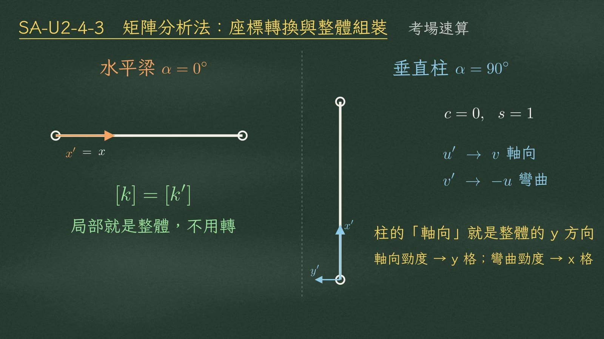
兩個特例：水平梁 α＝0° 不用轉；垂直柱 α＝90°：u′→v（軸向）、v′→−u（彎曲）影片 4:22
梁和剛架也一樣有捷徑：
| 情況 | c、s | 結果 |
|---|
| 水平梁 \(\alpha=0^\circ\) | \(c=1,\ s=0\) | 局部就是整體，\([k]=[k']\)，不用轉 |
| 垂直柱 \(\alpha=90^\circ\) | \(c=0,\ s=1\) | \(u'\to v\)（軸向）、\(v'\to -u\)（彎曲）：軸向勁度放進 y 那一格，彎曲勁度放進 x 那一格 |
四、對號入座與劃除法
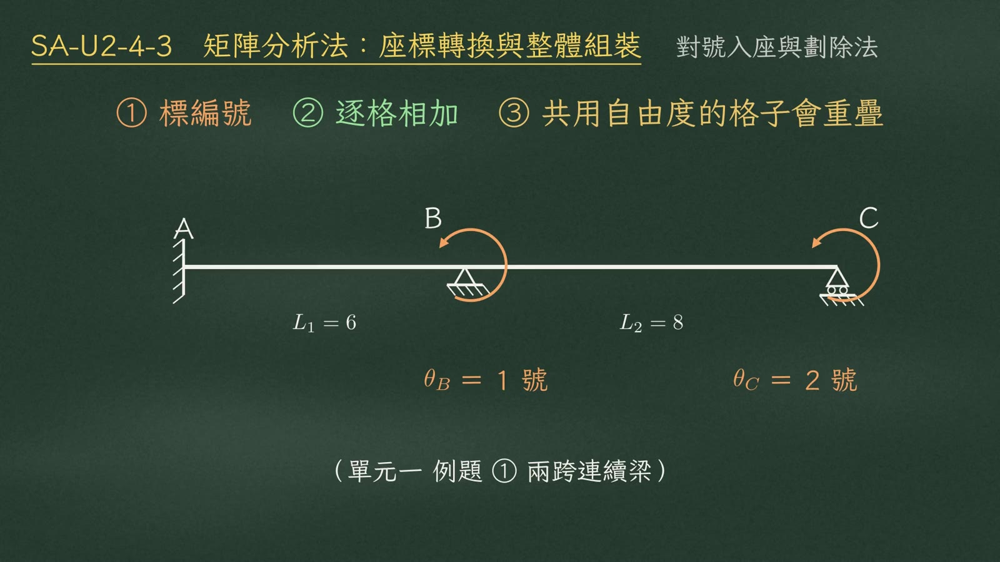
組裝三步＋單元一例題①兩跨連續梁（L₁＝6、L₂＝8；θ_B＝1 號、θ_C＝2 號）影片 4:42
接著是組裝。口訣只有三步：① 標編號 ② 逐格相加 ③ 共用自由度的格子會重疊。拿單元一的例題一，兩跨連續梁來看，自由度只有 \(\theta_B\)（一號）和 \(\theta_C\)（二號）。
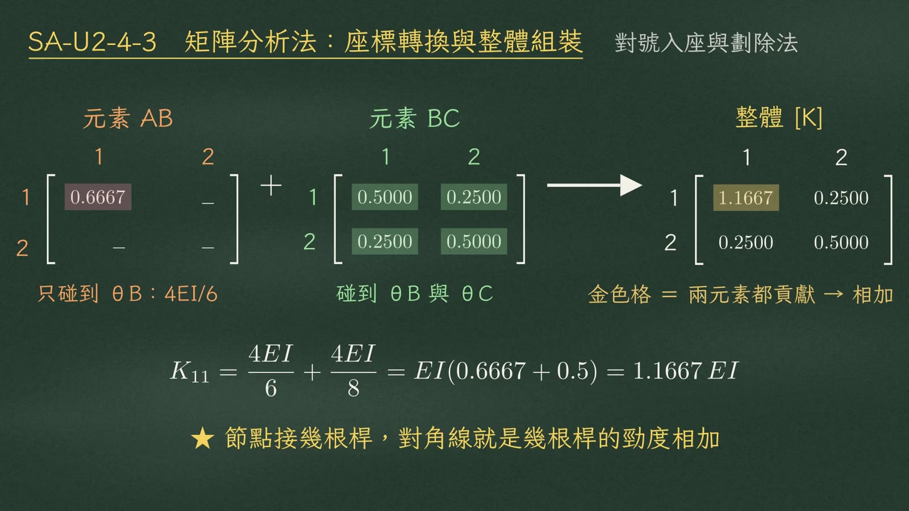
對號入座：元素 AB（粉紅）＋元素 BC（綠）→ 整體 [K]，K₁₁（金色）兩元素都貢獻影片 5:18
元素 AB 只碰到 \(\theta_B\)，所以它只有一號那一格，\(4EI/6=0.6667EI\)。元素 BC 碰到 \(\theta_B\) 和 \(\theta_C\)，是一個完整的 2×2：0.5、0.25、0.25、0.5。照編號加進大矩陣：
$$\underbrace{\begin{bmatrix}\color{#c4566e}{0.6667}&-\\-&-\end{bmatrix}}_{AB}+\underbrace{\begin{bmatrix}\color{#3f8f5a}{0.5}&\color{#3f8f5a}{0.25}\\\color{#3f8f5a}{0.25}&\color{#3f8f5a}{0.5}\end{bmatrix}}_{BC}\ \longrightarrow\ [K]=EI\begin{bmatrix}\color{#b8901f}{1.1667}&0.25\\0.25&0.5\end{bmatrix}$$
$$K_{11}=\frac{4EI}{6}+\frac{4EI}{8}=EI(0.6667+0.5)=1.1667\,EI$$
（顏色對應黑板：粉紅＝元素 AB、綠＝元素 BC、金色＝兩元素都貢獻的格子。）
★ 重點
節點接幾根桿，對角線就是幾根桿的勁度相加。
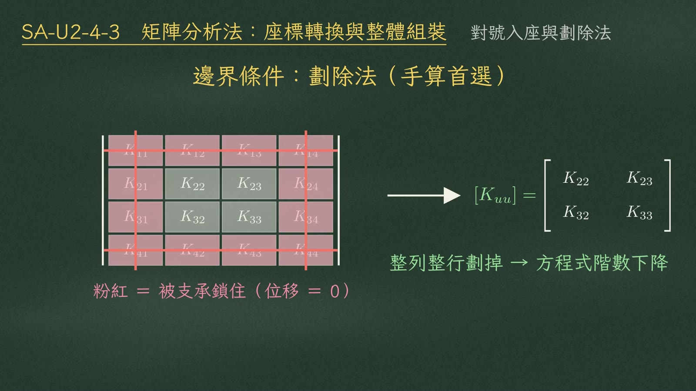
劃除法：粉紅＝被支承鎖住（位移＝0）的列與行，整列整行劃掉 → 剩 [Kuu]影片 5:38
支承怎麼處理？手算首選劃除法。被支承鎖住、位移等於零的自由度，直接把那一列、那一行整條劃掉，剩下的子矩陣就是 \([K_{uu}]\)，方程式的階數一下子降下來。
五、例題：三桿桁架
題目
D 點是自由節點；A 在 D 的左上方（水平 3 m、垂直 4 m）；B 在 D 的正上方 4 m；C 在 D 的右邊 4 m，三個都是鉸支。D 點受 \(P=90\ \text{kN}\) 向下，三根桿 \(EA\) 相同。
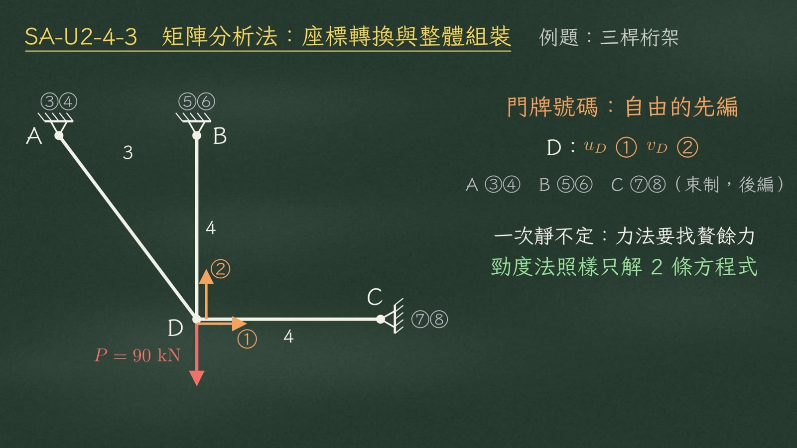
題目圖＋門牌號碼：自由的先編 D：u_D ①、v_D ②；受束制的後編 A ③④、B ⑤⑥、C ⑦⑧影片 6:31
先標門牌號碼。自由的先編：D 點的 \(u_D\) 是一號、\(v_D\) 是二號。受束制的後編：A 點三、四，B 點五、六，C 點七、八。
這題是一次靜不定，用力法要找贅餘力；勁度法照樣只解兩條方程式。
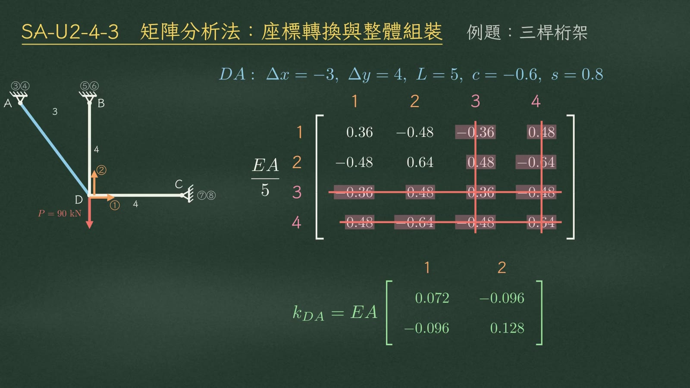
DA 桿：4×4 標門牌 1 2 3 4，3、4（支承）整列整行劃掉，只剩左上 2×2影片 7:05
以 DA 桿為例，從 D 到 A：
$$\Delta x=-3,\quad \Delta y=4,\quad L=5,\quad c=-0.6,\quad s=0.8$$
$$k_{DA}=EA\begin{bmatrix}0.072&-0.096\\-0.096&0.128\end{bmatrix}$$
完整的 4×4 旁邊寫上門牌一、二、三、四。三、四是支承，整列整行劃掉，只剩左上 2×2。
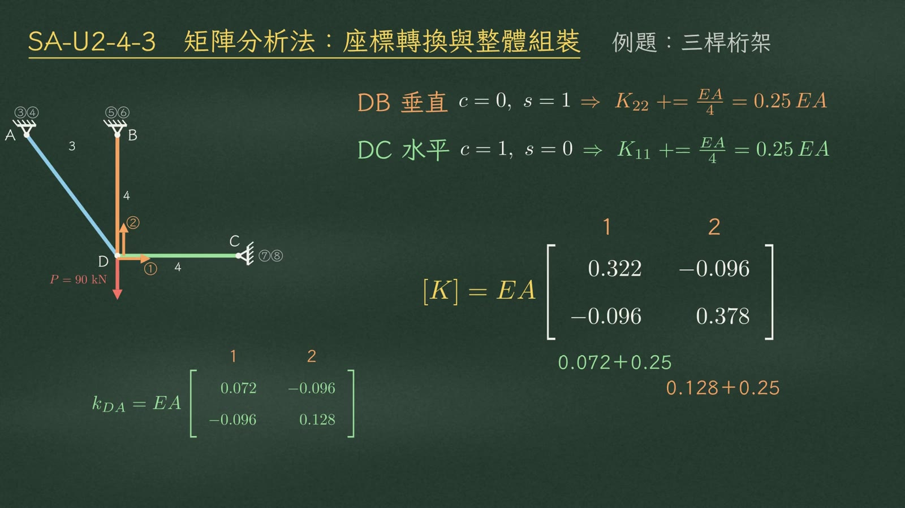
另外兩根是特例：DB 垂直只加 K₂₂、DC 水平只加 K₁₁，三桿對號入座相加影片 7:44
| 桿件 | c、s | 貢獻 |
|---|
| DA（斜） | \(c=-0.6,\ s=0.8\) | 完整 2×2：0.072、−0.096、−0.096、0.128（×EA） |
| DB（垂直） | \(c=0,\ s=1\) | 只有二號那一格：\(K_{22}\mathrel{+}=EA/4=0.25EA\) |
| DC（水平） | \(c=1,\ s=0\) | 只有一號那一格：\(K_{11}\mathrel{+}=EA/4=0.25EA\) |
三根桿都接在 D 點，對號入座全部加起來：
$$[K]=EA\begin{bmatrix}0.322&-0.096\\-0.096&0.378\end{bmatrix}\qquad\begin{aligned}K_{11}&=0.072+0.25\\K_{22}&=0.128+0.25\end{aligned}$$
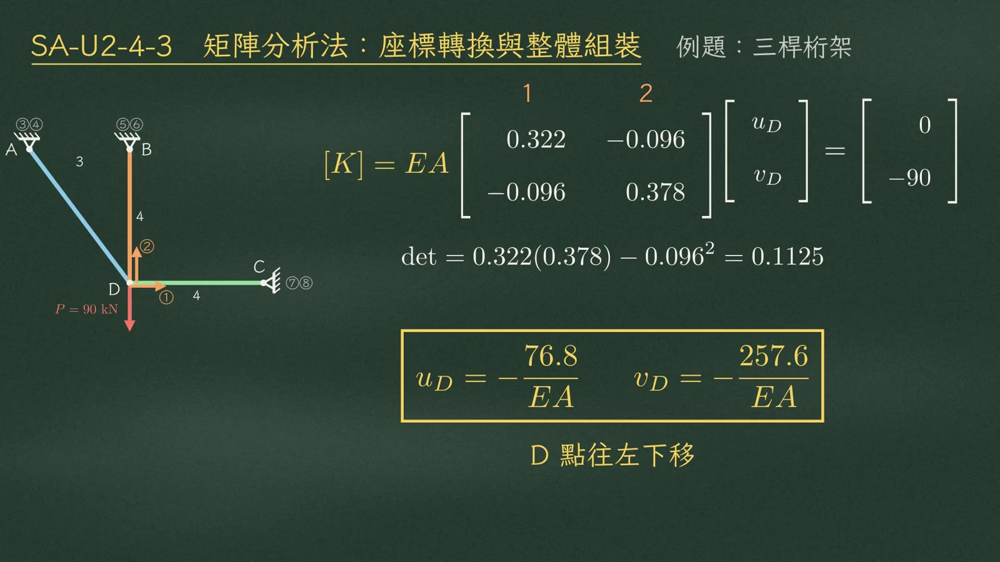
解位移：det＝0.1125 → u_D、v_D，D 點往左下移影片 8:08
右邊載重是 0 和 −90：
$$EA\begin{bmatrix}0.322&-0.096\\-0.096&0.378\end{bmatrix}\begin{Bmatrix}u_D\\v_D\end{Bmatrix}=\begin{Bmatrix}0\\-90\end{Bmatrix},\qquad \det=0.322(0.378)-0.096^2=0.1125$$
$$u_D=-\frac{76.8}{EA},\qquad v_D=-\frac{257.6}{EA}$$
D 點往左下移動。
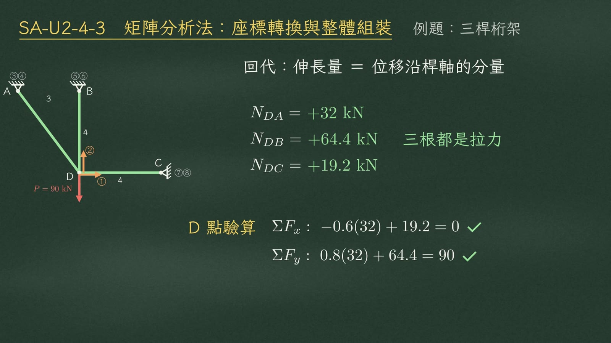
回代求軸力：三根都是拉力；D 點 ΣFx、ΣFy 驗算影片 8:44
回代求軸力。伸長量等於桿軸方向的位移分量：
| 桿件 | 軸力 | 性質 |
|---|
| \(N_{DA}\) | +32 kN | 三根都是拉力 |
| \(N_{DB}\) | +64.4 kN |
| \(N_{DC}\) | +19.2 kN |
✓ D 點驗算
\(\Sigma F_x:\ -0.6(32)+19.2=0\) \(\Sigma F_y:\ 0.8(32)+64.4=90\)（剛好等於 P）
六、三大檢查與陷阱
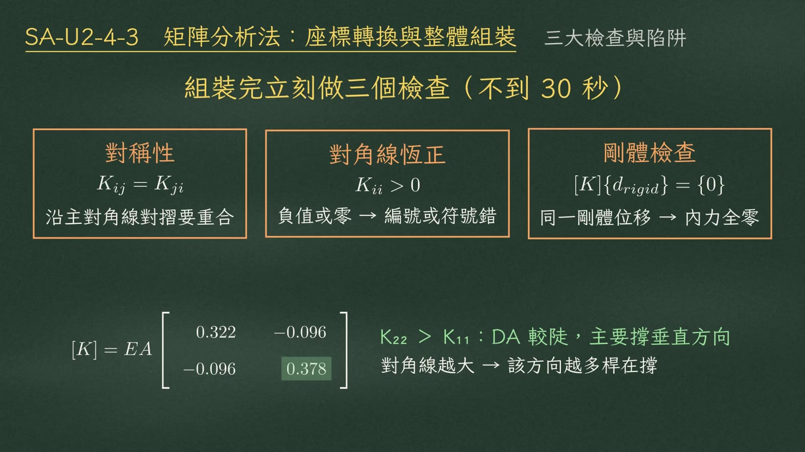
組裝完立刻做三個檢查（不到 30 秒）；下方：K₂₂＞K₁₁影片 9:21
組裝完立刻做三個檢查，花不到三十秒：
| 檢查 | 條件 | 說明 |
|---|
| ① 對稱性 | \(K_{ij}=K_{ji}\) | 沿主對角線對摺要重合 |
| ② 對角線恆正 | \(K_{ii}>0\) | 出現負的或零，就是編號或符號錯了 |
| ③ 剛體檢查 | \([K]\{d_{rigid}\}=\{0\}\) | 所有自由度給同一個剛體位移，內力必須全為零 |
對角線的物理意義
對角線越大，代表那個方向越多桿在撐。這題 \(K_{22}=0.378\) 比 \(K_{11}=0.322\) 大，因為斜桿 DA 比較陡，主要撐垂直方向。
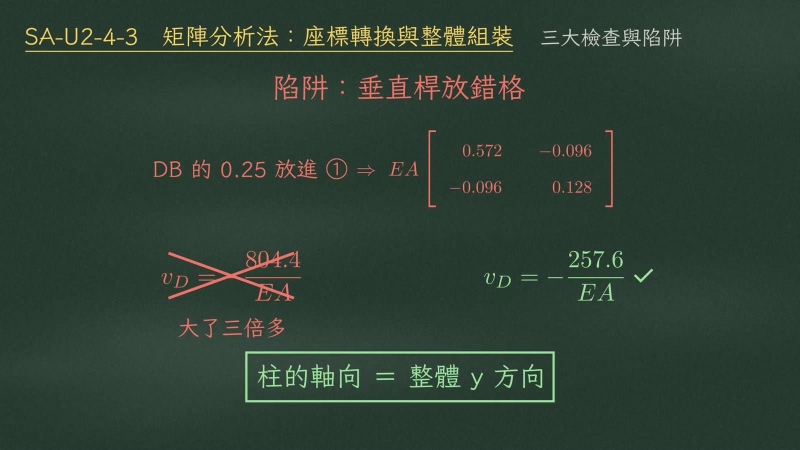
陷阱：垂直桿放錯格（紅）→ v_D 大了三倍多；正確值（綠）影片 9:45
⚠ 最常見的陷阱：垂直桿放錯格
如果把 DB 的 0.25 放進一號：
$$EA\begin{bmatrix}0.572&-0.096\\-0.096&0.128\end{bmatrix}\ \Rightarrow\ v_D=-\frac{804.4}{EA}\ \ \text{✗（大了三倍多）}\qquad\text{正確：}\ v_D=-\frac{257.6}{EA}$$
七、總結
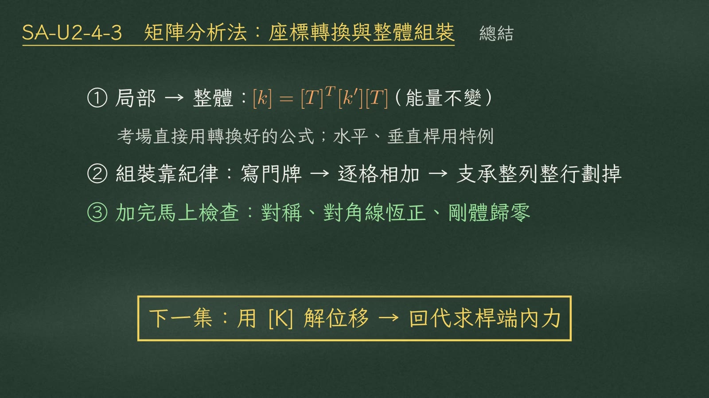
三點總結＋下一集預告影片 10:23
| 重點 | 內容 |
|---|
| ① 局部 → 整體 | \([k]=[T]^T[k'][T]\)，背後是能量不變；考場直接用轉換好的公式，水平、垂直桿用特例 |
| ② 組裝靠紀律 | 先寫門牌 → 再逐格相加 → 支承整列整行劃掉 |
| ③ 加完馬上檢查 | 對稱、對角線恆正、剛體位移歸零 |
下一集：用整體勁度矩陣解位移，再回代求桿端內力。